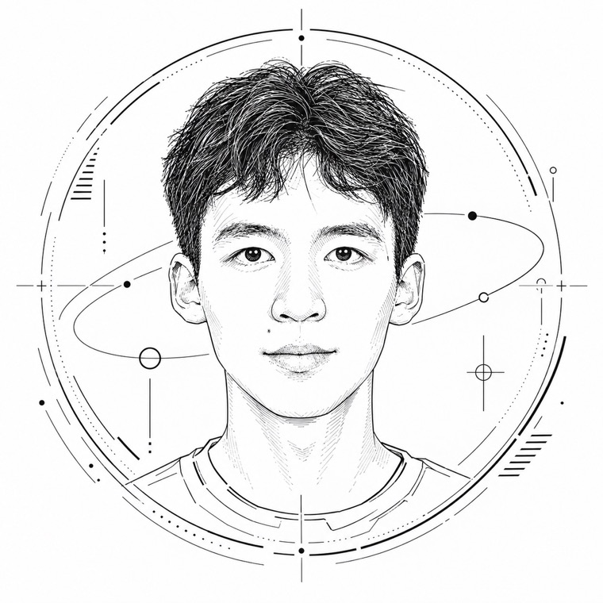

深圳 · 开放交流
当前探索 · AI for Science
Nick Lee
李泽毓
计算机科学学生，探索 AI、数学与金融
喜欢把复杂的问题拆开、把零散的线索串成体系；平时用数学和代码理解世界，也一步步朝着金融方向走去。
天津大学 × 香港理工大学 · 深圳未来技术学院

About
关于我
目前，我正专注于适应大学学习节奏，夯实计算机与数学专业基础；参与科研竞赛项目，打磨学生骨干经历；同步提升英文能力，为海外申研积累履历。
逻辑严谨
做事有条理，擅长拆解复杂概念。
习惯把零散知识点整理成结构化笔记，对细节敏感，会主动梳理知识之间的关联——把"拆解复杂"变成可复用的方法。
科研与实践并行
兼顾科研实践与学生工作，多维成长。
专业课学习、科研项目与学生工作三线并行：以课程打牢数理基础，以科研（如 Digital Resin）锻炼方法，以学生工作磨练协作与执行。
目标明确
方向清晰，执行力强。
以海外申研为中期目标，持续积累履历与英文能力；长期希望进入金融行业——目标清晰，路径明确。
Projects
项目
Digital Resin · 离子交换树脂数字孪生模型
进行中AI for Science 研究项目：构建离子交换树脂的数字孪生模型——输入树脂参数与运行条件，输出吸附性能预测的虚拟实验。
GitHub →
查看详情
大学志愿者论坛小程序
筹备中面向大学志愿者社群的微信小程序，支持提出建议、发布公告等功能，服务志愿活动的组织与沟通。
微信小程序
查看详情
Learning & Interests
学习与兴趣
数理基础
数学分析、线性代数——喜欢溯源推导底层原理。
计算机技术
开发环境配置、AI Agent、提示词工程、代码调试。
人文历史
历史思辨、文学心理解析。
规划成长
升学规划、履历打磨、效率工具研究。
摄影
热爱影像记录与光影表达，后期将上传个人作品，制作线上画展。